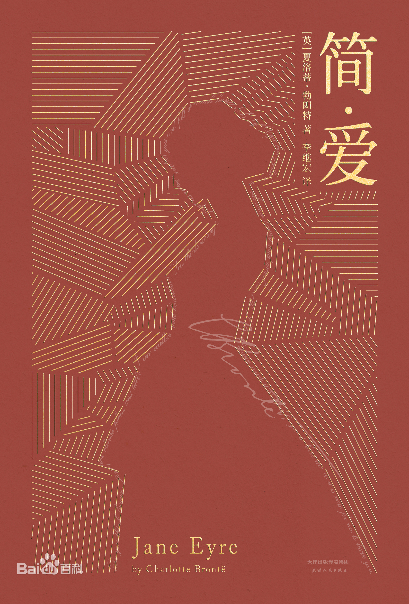

 《简·爱》（Jane Eyre）是英国女作家夏洛蒂·勃朗特创作的长篇小说，是一部具有自传色彩的作品。 该小说讲述孤女简·爱自幼父母双亡，寄养于舅母家，备受虐待，后被舅母打发到孤儿院去。孤儿院环境恶劣，但她顽强地活了下来。毕业两年后，简应聘去当家庭教师谋生。主人罗切斯特性格忧郁、喜怒无常，但经过较长时间接触，简发现罗切斯特心地善良，为人正直、刚毅，渐渐对他产生了感情。当他们在教堂举行婚礼时，简痛苦地发现，原来罗切斯特有一个疯妻。简悲伤地离去。后来，与她离散多年的叔父病故，遗赠给她巨额财产。因不能忘情于罗切斯特，她重回故地，才知数月前疯女人纵火而死，罗切斯特为救她一只眼睛被砸了出来，另一只眼睛发炎也看不见了。简立刻去向他倾诉衷情，两人终缔良缘。 后来，罗切斯特在伦敦医好了一只眼睛，和简·爱生下了一个男孩。 《简·爱》中简·爱的人生追求有两个基本旋律：富有激情、幻想、反抗和坚持不懈的精神；对人间自由幸福的渴望和对更高精神境界的追求。这本小说的主题是通过孤女坎坷不平的人生经历，成功地塑造了一个不安于现状、不甘受辱、敢于抗争的女性形象，反映一个平凡心灵的坦诚倾诉的呼号和责难，一个小写的人成为一个大写的人的渴望。
外文名:Jane Eyre
作者:【英】夏洛蒂·勃朗特
文学体裁:长篇小说